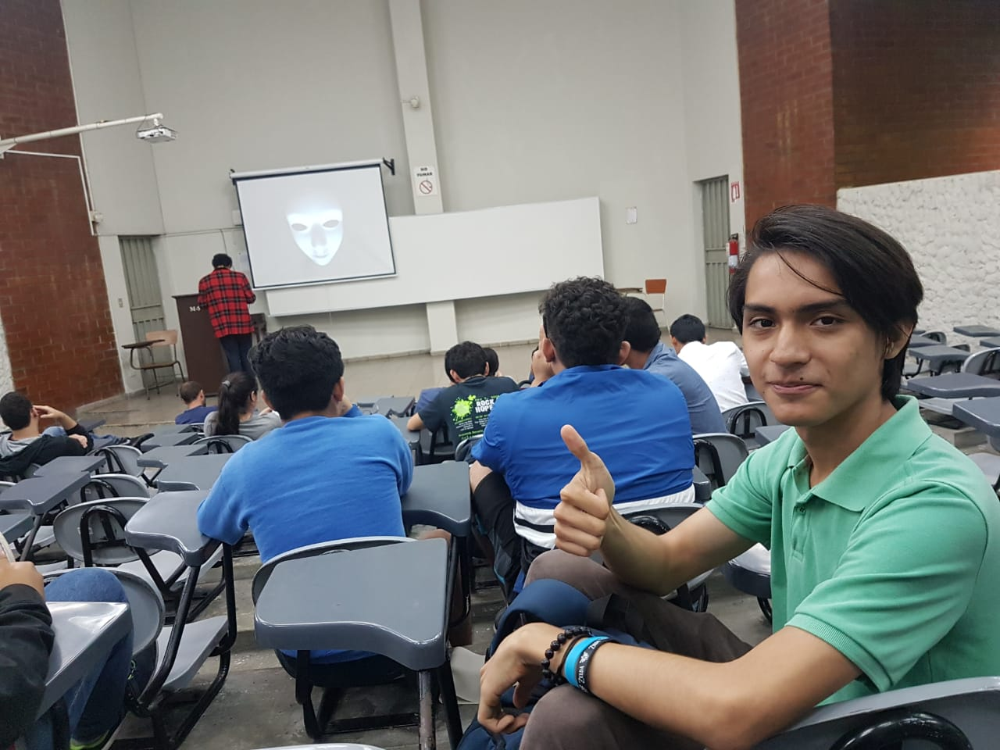
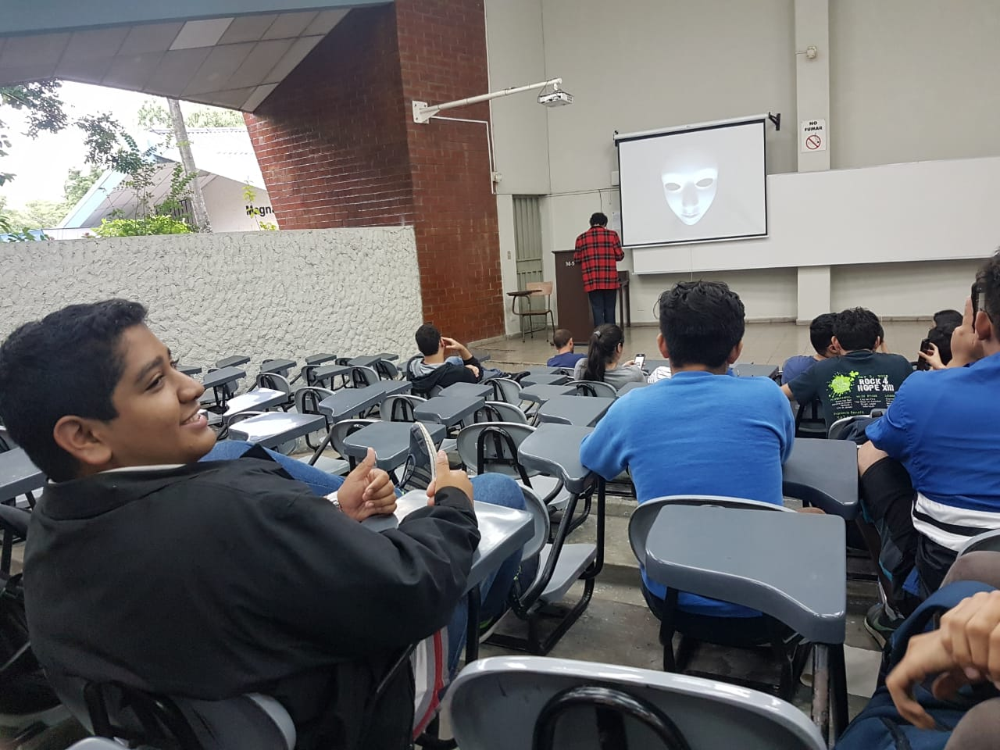

Bienvenidos a mi blog!
En este espacio les estaré comentando los momentos que he vivido durante la segunda semana de
Octubre.
Ale Rav reveló sus planes maleficos desde el primer día. Pero junto con la ayuda de mis demás
compañeros de carrera,
logramos salvar la UCA de la destrucción.
Acompañenme para saber mas de la historia.

Capítulo 1 - “Begin”
Al final de la clase de Administración de Bases de Datos del dia lunes a las 5 pm recibimos
un sospechoso video que parecia de un terroriste cibernetico.
Se hacía llamar "ALE RAV", y no parecia que tuviera buenas intenciones, ya que desde el inicio del
video
comenzo a contarnos su terrible plan: "Acabar con toda la UCA".
Al principio no comprendiamos porque alguien querria acabar con nuestra amada universidad, pero
despues, Ale Rav
nos explico que si la universidad se destruye por completo, esta obligada a entregarnos nuestros
titulos, hayamos
concluido nuestra carrera o no.
Muchos compañeros se empezaron a inclinar por ayudar a Ale Rav, pero en ese momento recibimos un
audio de un chico
llamado "KURT" que parecia muy asustado debido a que el conocia a Ale Rav, y no queria que este
destruyera todo lo
que amamos.
Este nos propuso unos ejercicios a resolver mediante un codigo QR, que al resolverlo nos mandaba a
buscar el
siguiente codigo al Polideportivo.
Capítulo 2 - “O-O-O”
El dia martes mis amigos y yo, tratamos de llegar muy temprano a la universidad para buscar en el
Polideportivo
el correspondiente mensaje de Kurt y sus amigos, fue una tarea muy dificil pero al final lo
terminamos encontrando
en unas mesas cerca del gimnasio, en el nos proponia mas ejercicios para poderlos realizar y
encontrar el siguiente
paso a seguir en esta historia.
Capítulo 3 - “minus monocromo”
Al descifrar el segundo codigo, nos decia que el tercer dia estarian pintando un mural, que
entablaramos
conversacion con un chico que estaria ahi, y que cuando ya hayamos logrado confianza, nos revelaria
la ubicacion
de los codigos QR que Kurt habia dejado para nosotros
Efectivamente los encontramos los codigos y al escanearlos, junto a todos los compañeros, nos
encontramos
con la sorpresa de que teniamos que realizar otros codigos para poder asi revelar la siguiente
actividad.
Capítulo 4 - “cumulonimbus”
Todo estaba muy tranquilo el cuarto día, parecia que todo se habia calmado por un momento,
pero cuando menos lo esperabamos, recibimos un mensaje...
En este Kurt nos mandaba una nueva pista para poder descubrir quien es Ale Rav.
Mediante un drone, nos envio un nuevo codigo QR donde venian las ultimas instrucciones para poder
llegar asi
a parar los planes del todopoderoso Ale.
Al completar estos ejercicios propuestos, Kurt nos convocaba a una reunion en la magna V, en donde
por fin despues
de una semana complicada, nos revelaria la identidad de Ale.
Capítulo 5 - “Commit”
El dia final se aproximaba, todos esperaban con emocion el desenlace de esta gran historia, con Ale
Rav
y sus planes frustados todo era paz y amor, nada podia salir mal, verdad?

Pues salio muy mal :(
No sabemos mucho, pero de alguna forma Ale Rav acaba de asesinar a Kurt.
Al parecer Kurt presentia cada vez mas su muerte, por eso traia consigo un codigo QR que por fin
revelara quien es
Ale.
No lo puedo creer :o, Ale Rav es nuestro antiguo catedratico de Bases de Datos, Erick Varela.
El estuvo detras de todo desde un inicio. Pero ahora que sabemos su identidad no lo dejaremos
tranquilo nunca más...
